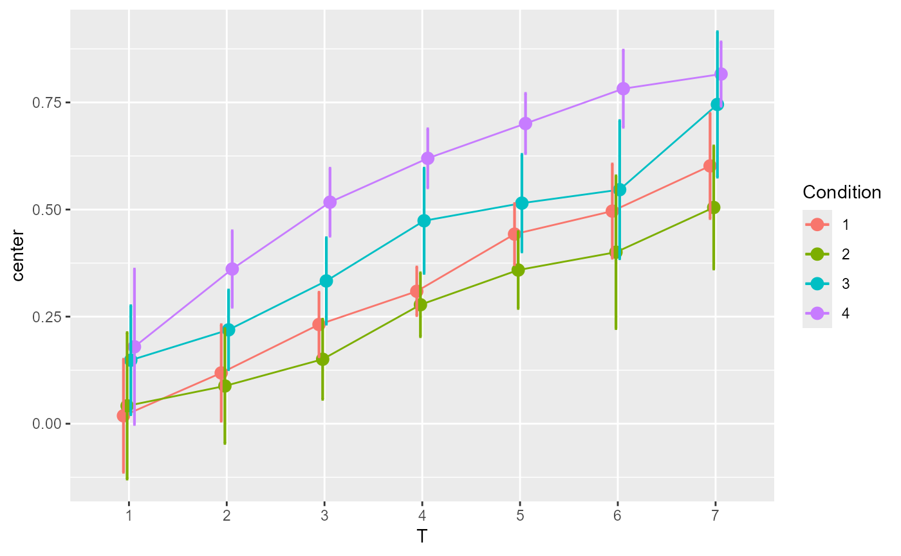
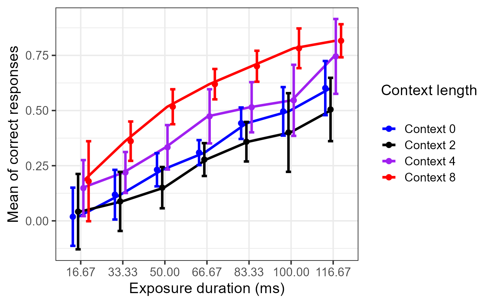

Data of Tulving, Mandler, & Baumal, 1964 (reproduction of 2021)
TMB1964r.RdThe data comes from Bradley-Garcia and others (2021) . It is a near exact replication of the original study from (Tulving et al. 1964) .
data(TMB1964r)
Format
An object of class data.frame.
Details
The design is a (7) x 4 with: 7 levels of stimulus duration (within-subject) and 4 between-subject conditions. Additional variables included in the reproduction is the primary language of the participant in which he/she participated (mainly francophones and anglophones; and the gender (mainly male and female).
References
Bradley-Garcia M, others 3 (2021).
“Getting the most from your curves: Exploring and reporting data using informative graphical techniques.”
The Quantitative Methods for Psychology, 17(2), xx--xx.
Tulving E, Mandler G, Baumal R (1964).
“Interaction of two sources of information in tachistoscopic word recognition.”
Canadian Journal of Psychology/Revue canadienne de psychologie, 18(1), 62.
Examples
library(ggplot2) data(TMB1964r) # general plot ignoring covariates sex and languages with only defaults # We illustrate correlation- and difference-adjusted 95% confidence intervals of the mean superbPlot(TMB1964r, WSFactor = "T(7)", # the within-subject factor (spanning 7 columns) BSFactor = "Condition", # the between-subject factor (4 levels) variables = c("T1","T2","T3","T4","T5","T6","T7"), adjustments = list(purpose="difference", decorrelation="CM"), plotStyle = "line", Quiet = TRUE )# We add directives for the error bars (thick), for the points (larger) and for the lines (thick) plt <- superbPlot(TMB1964r, WSFactor = "T(7)", BSFactor = "Condition", variables = c("T1","T2","T3","T4","T5","T6","T7"), adjustments = list(purpose="difference", decorrelation="CM"), plotStyle = "line", Quiet = TRUE, errorbarParams = list(width = 0.5, size=1.25, position = position_dodge(.5) ), pointParams = list(size=2.5, position = position_dodge(.5)), lineParams = list(size=1.25) ) plt# Additional directives to set manually the colors, shapes, thick marks and labels. plt + scale_colour_manual( labels = c("Context 0", "Context 2", "Context 4", "Context 8"), values = c("blue", "black", "purple", "red")) + scale_shape_manual( labels = c("Context 0", "Context 2", "Context 4", "Context 8"), values = c("circle", "triangle", "square", "plus")) + theme_bw(base_size = 16) + labs(x = "Exposure duration (ms)", y = "Mean of correct responses", colour = "Context length\n", shape = "Context length\n" ) + scale_x_discrete(labels=c("1" = "16.67", "2" = "33.33", "3"="50.00", "4" = "66.67", "5"="83.33", "6"="100.00", "7"="116.67"))# Exploring three factors simultaneously: T, Condition and Sex (last two between-group) superbPlot(TMB1964r, WSFactor = "T(7)", BSFactor = c("Condition","Sex"), variables = c("T1","T2","T3","T4","T5","T6","T7"), adjustments = list(purpose="difference", decorrelation="CM"), plotStyle = "line", Quiet=TRUE, errorbarParams = list(size=0.05, position = position_dodge(.5) ), pointParams = list(size=2.5, position = position_dodge(.5)), lineParams = list(size=0.25) ) + scale_colour_manual( labels = c("Context 0", "Context 2", "Context 4", "Context 8"), values = c("blue", "black", "purple", "red")) + scale_shape_manual( labels = c("Context 0", "Context 2", "Context 4", "Context 8"), values = c("circle", "triangle", "square", "plus")) + theme_bw(base_size = 16) + labs(x = "Exposure duration (ms)", y = "Mean of correct responses", colour = "Context length\n", shape = "Context length\n" ) + scale_x_discrete(labels=c("1" = "16.67", "2" = "33.33", "3"="50.00", "4" = "66.67", "5"="83.33", "6"="100.00", "7"="116.67"))#only keep 2 sex and 2 languages; the remaining cases are too sparse. # even then, one cell is near empty. Only CA would work... mee3 <- TMB1964r[(TMB1964r$Language != "I prefer not to answer")&TMB1964r$Language !="Other",] # advanced plots are available, such as pointjitter ... superbPlot(mee3, WSFactor = "T(7)", BSFactor = c("Condition","Language"), variables = c("T1","T2","T3","T4","T5","T6","T7"), adjustments = list(purpose="difference", decorrelation="CM"), Quiet = TRUE, plotStyle = "pointjitter", jitterParams = list(alpha = 0.25) #near transparent jitter points ) + scale_fill_manual( name = "Amount of context", labels = c("Context 0", "Context 2", "Context 4", "Context 8"), values = c("blue", "black", "purple", "red")) + scale_colour_manual( name = "Amount of context", labels = c("Context 0", "Context 2", "Context 4", "Context 8"), values = c("blue", "black", "purple", "red")) + scale_shape_manual( name = "Amount of context", labels = c("Context 0", "Context 2", "Context 4", "Context 8"), values = c("circle", "triangle", "square", "cross")) + theme_bw(base_size = 16) + labs(x = "Exposure duration (ms)", y = "Mean of correct responses" )+ scale_x_discrete(labels=c("1" = "16.67", "2" = "33.33", "3"="50.00", "4" = "66.67", "5"="83.33", "6"="100.00", "7"="116.67"))# ... and pointjitterviolin : a plot that superimposes the distribution as a violin plot # superbPlot(mee3, WSFactor = "T(7)", BSFactor = c("Condition","Language"), variables = c("T1","T2","T3","T4","T5","T6","T7"), adjustments = list(purpose="difference", decorrelation="CM"), Quiet = TRUE, plotStyle = "pointjitterviolin", jitterParams = list(alpha = 0.4), #near transparent jitter points violinParams = list(alpha = 0.2) ) + scale_fill_manual( name = "Amount of context", labels = c("Context 0", "Context 2", "Context 4", "Context 8"), values = c("blue", "black", "purple", "red")) + scale_colour_manual( name = "Amount of context", labels = c("Context 0", "Context 2", "Context 4", "Context 8"), values = c("blue", "black", "purple", "red")) + scale_shape_manual( name = "Amount of context", labels = c("Context 0", "Context 2", "Context 4", "Context 8"), values = c("circle", "triangle", "square", "cross")) + theme_bw(base_size = 16) + labs(x = "Exposure duration (ms)", y = "Mean of correct responses" )+ scale_x_discrete(labels=c("1" = "16.67", "2" = "33.33", "3"="50.00", "4" = "66.67", "5"="83.33", "6"="100.00", "7"="116.67"))